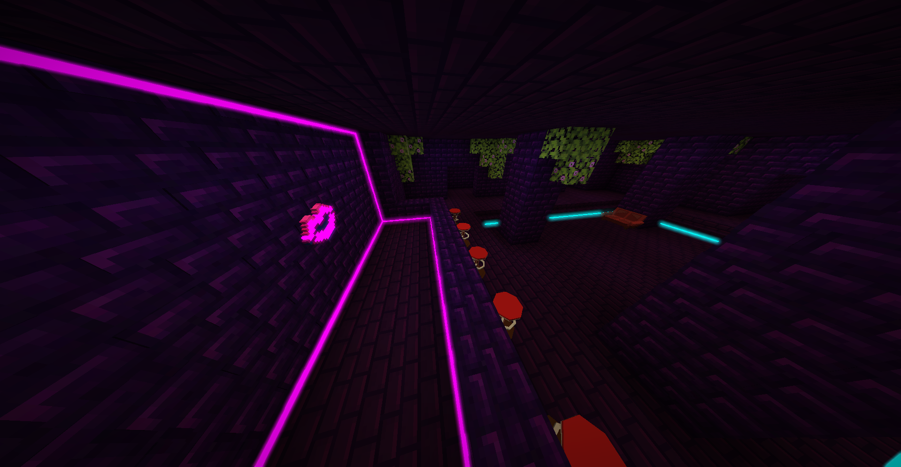
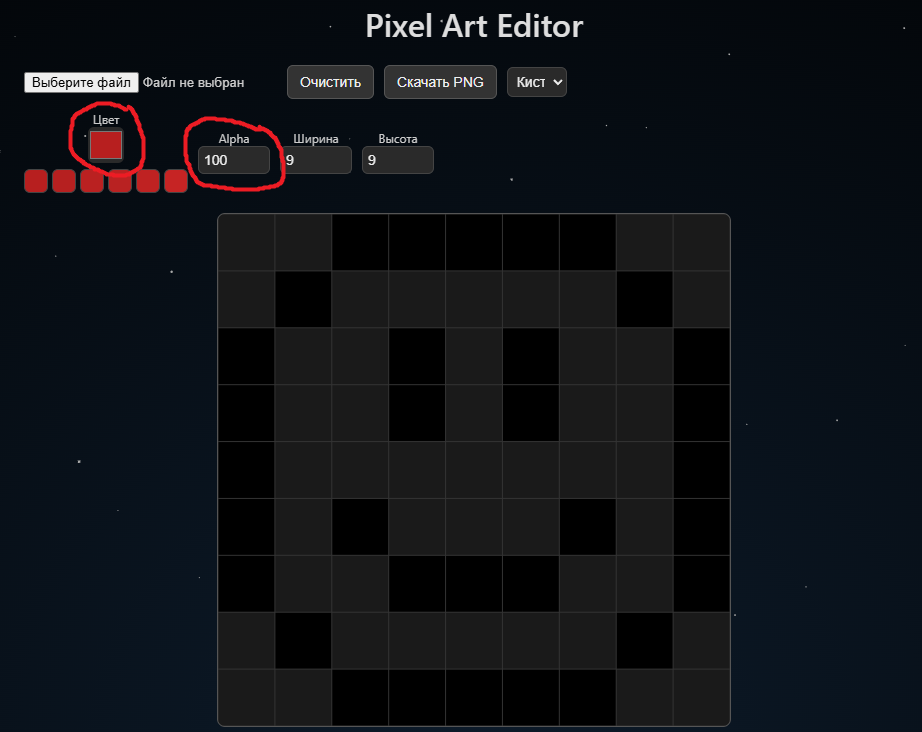
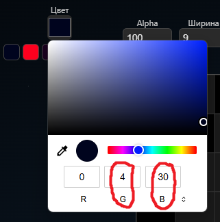
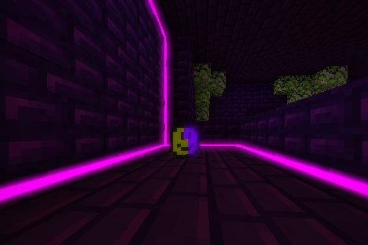

📌 О шейдере
Ванильный шейдер, который позволяет добавить свой bloom эффект в Minecraft без использования OptiFine, Forge, Fabric и других модов. Всё реализовано через ресурспак.
📋 Что нужно сделать:
- Скачать ресурспак
- Закинуть его файлы в ваш ресурспак, или просто установить в Minecraft
- Следуя инструкции, добавьте bloom пиксель на любой объект
- Включите «Настройки графики → Графика: ПОТРЯСАЮЩАЯ»
- Наслаждайтесь bloom-эффектом!
✨ Как сделать Bloom:
Чтобы создать bloom-эффект на вашей текстуре или модельке, просто следуйте этим шагам:
1. Зайди в любой графический редактор. Желательно который ресует пиксель-арты, для точности.
2. Чтобы пиксель был читаем шейдером, установите его прозрачность ровно на 100: 
3. После того как вы установили прозрачноть на 100 вы должны выбрать цвет и силу свечения для пикселя. Что бы выставить нужные параметры, зайдите в настройки цвета (RGB) и выставьте нужные параметры:
- R (Красный) — Отвечает за 🕳️ничего.
- G (зелёный) — Отвечает за 🎨цвет свечения, установите число взависимости от того какой цвет вы хотите себе *список цветов ниже*
- B (синий) — Отвечает за 💪силу свечения, от 1 до 255 чем больше число, тем сильнее и ярче будет блум эффект. 
4. После этого вокруг пикселя создаётся блум эффект с тем цветом, и яркостю, которые вы задали.
🎨 Доступные цвета для bloom:
| Название | Цвет G |
|---|---|
| Красный | 0 |
| Тёмно-красный | 1 |
| Оранжевый | 2 |
| Тёмно-оранжевый | 3 |
| Жёлтый | 4 |
| Тёмно-жёлтый | 5 |
| Зелёный | 6 |
| Тёмно-зелёный | 7 |
| Голубой | 8 |
| Тёмно-голубой | 9 |
| Синий | 10 |
| Тёмно-синий | 11 |
| Фиолетовый | 12 |
| Тёмно-фиолетовый | 13 |
| Розовый | 14 |
| Тёмно-розовый | 15 |
| Серый | 16 |
| Тёмно-серый | 17 |
| Белый | 18 |
| Чёрный (отключено) | 19 |
🔧 Если вдруг проблемы...
- ❗ Убедитесь, что включена графика: ПОТРЯСАЮЩЕ!
- ❗ Bloom работает только в мире на [предметы, блоки, item_display, block_display] [инвентарь, сундуки и другие интерфейсы] — не будет работать.
- ❗ Пиксель должен иметь ровно 100 из 255 прозрачности. Чтобы это гарантировать:
- Сначала удалите этот пиксель полностью
- Затем заново поставьте пиксель с прозрачностью ровно
100
- ❗ Если у вас низкий FPS — откройте файл:
minecraft/shaders/program/rayshaders_bloom.fsh
и на 25 строке замените:
const int Ranges = 6;
на, например,const int Ranges = 4;— это уменьшит радиус, но увеличит производительность. - ❓ Остались вопросы или баги? Напиши мне в Discord: tagesbw